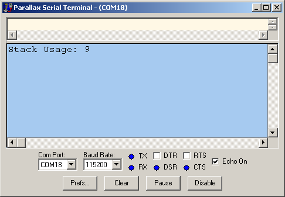

A "stack," or stack space, is a block of memory used to store temporary data needed for proper program execution. The Propeller automatically handles the stack for the application cog, but launching additional cogs may require extra stack space allocated by the developer.
The following information demonstrates the need for stack space and describes the use of the Stack Length object to calculate the amount needed for a given process in a cog. The Stack Length object is included in the Propeller Tool Library.
Does the Propeller use a call stack? The answer is yes and no.
The Spin Interpreter implements a call stack to facilitate Spin method calling, parameter passing, and expression evaluation. The Propeller Application's stack is located in Main RAM immediately following the application's global variable memory. It expands and collapses as needed; growing towards higher addresses and shrinking towards lower addresses. Spin methods that are manually launched into other cogs store their stack starting at the StackPointer address given by the COGNEW or COGINIT command that launched them. Their stacks expand and contract in the same manner as with the Propeller Application stack. In both cases, the capacity of the stack (method nesting-depth, parameter list length, and expression complexity) is limited only by the amount of free memory available (for the application) or memory provided (by the developer).
Propeller Assembly language does not implement a call stack since doing so would unnecessarily consume valuable memory and impose undue limitations on applications. Instead, Propeller Assembly provides a different mechanism through the JMPRET instruction (and also CALL, JMP, and RET) to maintain nested call history. This method requires more developer influence but allows the memory to be used more efficiently (optimizing for the specific application) and has a distinct advantage allowing the implementation of simple task-switching code in real-time systems using JMPRET.
You need to provide memory for stack space any time you execute a COGNEW or COGINIT command that launches Spin code (as opposed to Propeller Assembly code). The act of doing this is not difficult (see COGNEW and COGINIT documentation for examples), but determining the amount of space needed is a bit challenging.
While developing an object that allocates a stack, it is good practice to make the stack larger than necessary, then optimize it after all development is done. This practice helps avoid strange behaviors that can easily be misinterpreted as a bug in the code when, in fact, the process simply has too small a stack for its purposes.
A very safe "initial" size is 128 longs of stack space for each cog launched. When you have made all your final code tweaks and are completely finished with your object, only then is it time to optimize the stack space. Often it can be optimized to as low as 9 or 10 longs.
Why bother optimizing stack space at all? Doing so will save valuable memory and perhaps development time in the long run. Your un-optimized object may be fine for its initial intended use, but without optimization it may not be ready for future applications where memory might be more scarce.
Once development is done and it's time to optimize stack space, you can use the Stack Length object to determine the appropriate size.
The Stack Length object makes testing easy:
The Stack Length test code transmits the result (the actual stack space required) as a serial string on the transmit pin (typically P30). The serial string is easily viewed with the Parallax Serial Terminal included with the Propeller Tool.
Let's take a look at an example. The excerpt below is from Stack Length Demo.spin, which is included in the Propeller Tool Library Demos.
The top section is temporary code to be inserted above the object code to be tested. In this case, the code to be tested begins at the VAR block.
There are three places in the TestStack method that must be adjusted to work with the object being tested and the serial display option being used:
{••••••••••••••••••••••••••••••••••••••••••••••••••••••••••••••••••••••••••••••••••••••••••••••••••••••••}
{••••••••••••••••••••••••••••••••• Temporary Code to Test Stack Usage •••••••••••••••••••••••••••••••••}
{••••••••••••••••••••••••••••••••••••••••••••••••••••••••••••••••••••••••••••••••••••••••••••••••••••••••}
CON _clkmode = xtal1 + pll16x 'Use crystal * 16 for fast serial _xinfreq = 5_000_000 'External 5 MHz crystal on XI & XO
OBJ Stk : "Stack Length" 'Include Stack Length Object
PUB TestStack Stk.Init(@Stack, 32) 'Initialize reserved Stack space (reserved below) Start(16, 500, 0) 'Exercise code/object under test waitcnt(clkfreq * 2 + cnt) 'Wait ample time for max stack usage Stk.GetLength(30, 115200) 'Transmit results serially out P30 at 115,200 baud {••••••••••••••••••••••••••••••••••••••••••••••••••••••••••••••••••••••••••••••••••••••••••••••••••••••••} {•••••••••••••••••••••••••••••• Code/Object Being Tested for Stack Usage ••••••••••••••••••••••••••••••} {••••••••••••••••••••••••••••••••••••••••••••••••••••••••••••••••••••••••••••••••••••••••••••••••••••••••}
VAR
long Stack[32] 'Stack space for new cog
PUB Start(Pin, DelayMS, Count)
{{Start new toggling process in a new cog.}}
cognew(Toggle(Pin, DelayMS, Count), @Stack)
PUB Toggle(Pin, DelayMS, Count)
{{Toggle Pin, Count times with DelayMS milliseconds in between.
If Count = 0, toggle Pin forever.}}
dira[Pin]~~ 'Set I/O Pin to output direction
repeat 'Repeat the following
!outa[Pin] ' Toggle I/O Pin
waitcnt(clkfreq / 1000 * DelayMS + cnt) ' Wait for DelayMS milliseconds
while Count := --Count #> -1 'While Count-1 is not 0 (limit minimum to -1)
Here are the steps to follow for this demo with your Propeller Demo Board, PE Kit Platform, or any Propeller development system using a 5 MHz external crystal.
A countdown message may appear until the Propeller Tool releases the serial port. Then, the stack usage message is displayed with the test results.

Test results for the Stack Length Demo displayed in the Parallax Serial Terminal
This means the object being tested only used 9 longs of space in the array variable Stack. The test code can now be removed and the Stack array variable can safely be updated to be only 9 longs in length.
You can copy the temporary code out of the Stack Length Demo for testing your own objects; here are some things you should do:
Propeller Help Version 1.2
Copyright © Parallax Inc., dba Parallax Semiconductor
6/17/2011